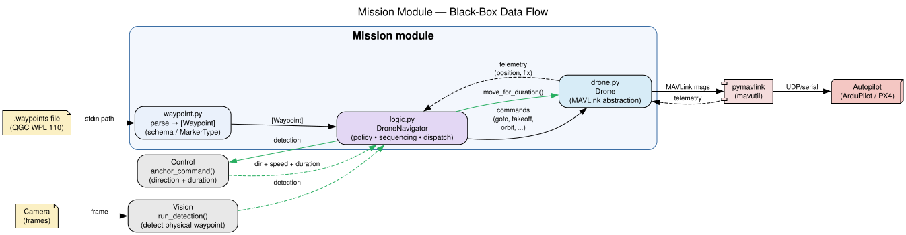
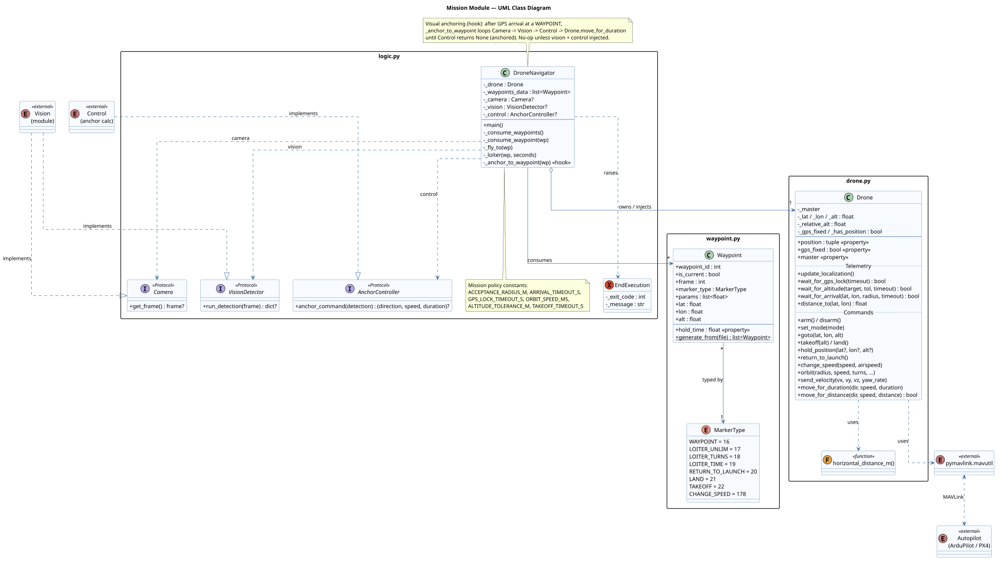
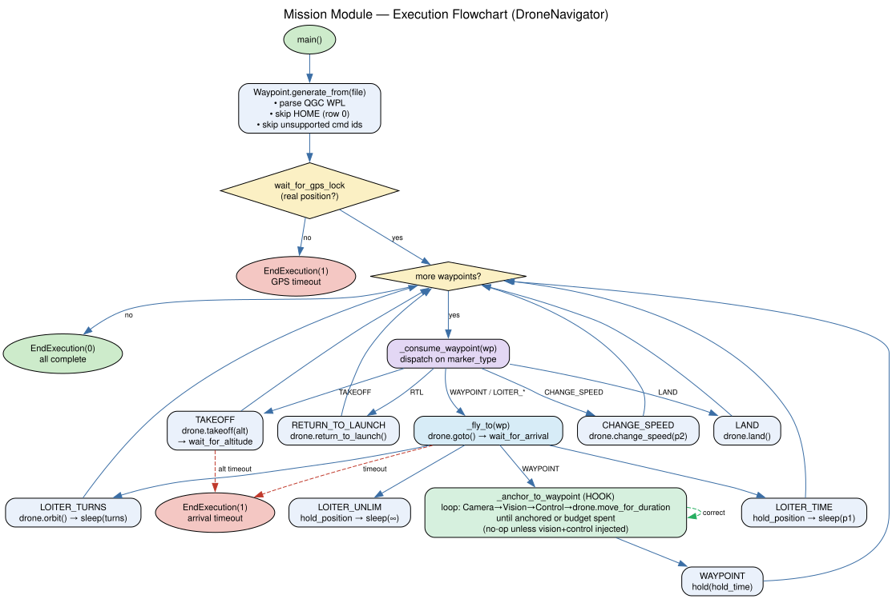
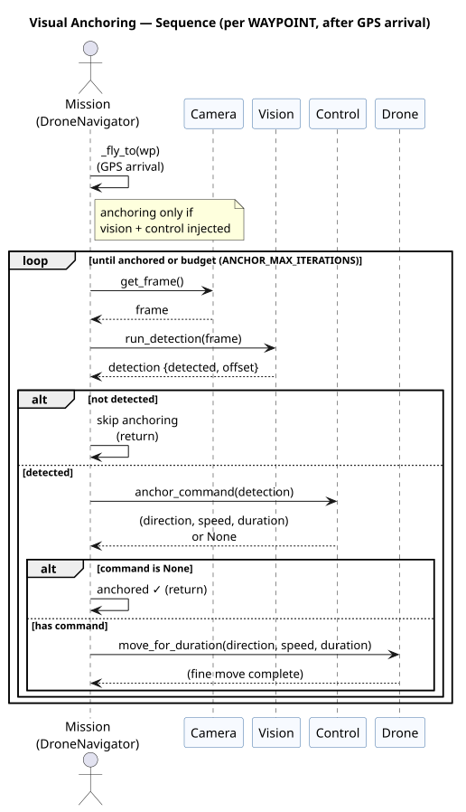

Black-box overview
The Mission module turns a Mission Planner / QGC waypoint file into a sequence of
real-time MAVLink commands flown in GUIDED mode. It owns the MAVLink
link (via Drone) and passes that same handle into the Vision and Control
modules — there is no ownership handoff.
Inputs
- Waypoint file (
.waypoints/.txt, QGC WPL 110) — path read from stdin - Telemetry from the autopilot (
GLOBAL_POSITION_INT,GPS_RAW_INT) over MAVLink
Outputs
- MAVLink commands to the autopilot (takeoff, goto, loiter, orbit, RTL, change-speed, land)
- Shared
Droneinstance injected into Vision / Control - Exit status via
EndExecution(0 = healthy, 1 = aborted)

UML class diagram
Three files, clean separation: waypoint.py (parsing/schema) →
logic.py (mission policy & sequencing) → drone.py
(the only code that touches pymavlink).

Execution flowchart
How DroneNavigator consumes the waypoint list: gate on a real GPS fix,
then dispatch each waypoint on its MarkerType, blocking until the
behavior actually completes (arrival, climb, loiter, orbit) before continuing.

Visual anchoring (fine movement)
GPS gets the drone near a waypoint (acceptance radius ~1.5 m). To
anchor precisely onto a physical waypoint seen by the camera,
Mission runs a closed loop after GPS arrival: it asks Vision to detect the
marker and Control to compute the corrective move (a body-frame direction
plus a duration), then executes it via Drone.move_for_duration — repeating until
Control reports the drone is centered.
Mission only orchestrates. Detection lives in Vision; the direction/duration
math lives in Control. Mission provides the hooks (the Camera,
VisionDetector, and AnchorController Protocols) and the loop. The
whole step is a no-op unless a vision detector and anchor controller are injected, so the
mission still runs GPS-only by default.

Hook contract
| Protocol | Method | Returns |
|---|---|---|
Camera | get_frame() | latest frame, or None |
VisionDetector | run_detection(frame) | {"detected": bool, ...offset} |
AnchorController | anchor_command(detection) | (direction, speed, duration), or None when anchored |
See visual_anchoring.md for the full contract, configuration, and failure modes.
Waypoint behaviors (MarkerType → MAV_CMD)
| MarkerType | MAV_CMD id | Drone action | Key params |
|---|---|---|---|
| WAYPOINT | 16 | goto + wait_for_arrival | lat/lon/alt |
| LOITER_UNLIM | 17 | hold_position (indefinite) | — |
| LOITER_TURNS | 18 | orbit (blocks for turns) | p1=turns, p3=radius |
| LOITER_TIME | 19 | hold_position + sleep | p1=seconds |
| RETURN_TO_LAUNCH | 20 | return_to_launch | — |
| LAND | 21 | land | — |
| TAKEOFF | 22 | takeoff + wait_for_altitude | alt |
| CHANGE_SPEED | 178 | change_speed | p2=speed (m/s) |
Row 0 of a QGC WPL file (HOME) and unsupported command ids are skipped by the parser.